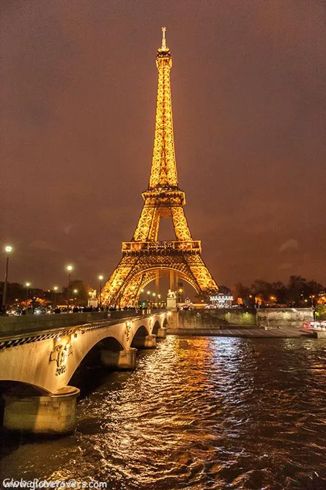

About Paris


Why Visit Paris?
Known as the City of Light, Paris is filled with romance, art, and culture. Visitors can admire world-famous landmarks, enjoy delicious French cuisine, and experience the charm of its beautiful streets and cafés.
Best Time to Visit
The best time to visit Paris is from April to June and September to October, when the weather is mild and the city is alive with festivals and outdoor cafés.
Top Attractions
- Eiffel Tower
- Louvre Museum
- Notre-Dame Cathedral
- Champs-Élysées
- Montmartre
Local Food & Culture
- Croissant
- A soft, flaky pastry loved by locals and visitors alike.
- Art and Fashion
- Paris is famous for its art museums, designer boutiques, and world-class fashion scene.